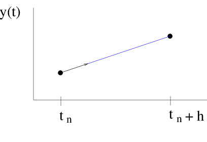
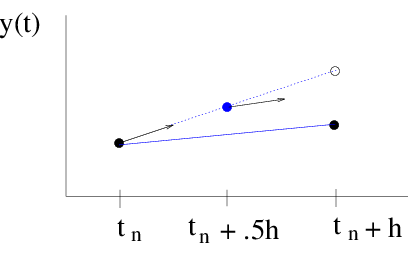

Assignment: see canvas for the problems you should hand-in.
In this lab, you will explore Runge-Kutta methods for solving ordinary differential equations. The goal is to gain a better understanding of some of the more popular Runge-Kutta methods and the corresponding numerical code.
Specifically you will be able to:
describe the mid-point method
construct a Runge-Kutta tableau from equations or equations from a tableau
describe how a Runge-Kutta method estimates truncation error
edit a working python code to use a different method or solve a different problem
There is no required reading for this lab, beyond the contents of the lab itself. However, if you would like additional background on any of the following topics, then refer to the sections indicated below.
Runge-Kutta Methods:
- Newman, Chapter 8
- Press, et al. Section 16.1
- Burden & Faires Section 5.4
Ordinary differential equations (ODEs) arise in many physical situations. For example, there is the first-order Newton cooling equation discussed in Lab 1, and perhaps the most famous equation of all, the second-order Newton’s Second Law of Mechanics \(F=ma\) .
In general, higher-order equations, such as Newton’s force equation, can be rewritten as a system of first-order equations . So the generic problem in ODEs is a set of N coupled first-order differential equations of the form,
where \({\bf y}\) is a vector of variables.
For a complete specification of the solution, boundary conditions for the problem must be given. Typically, the problems are broken up into two classes:
Initial Value Problem (IVP): the initial values of \({\bf y}\) are specified.
Boundary Value Problem (BVP): \({\bf y}\) is specified at the initial and final times.
For this lab, we are concerned with the IVP’s. BVP’s tend to be much more difficult to solve and involve techniques which will not be dealt with in this set of labs.
Now as was pointed out in Lab 2, in general, it will not be possible to find exact, analytic solutions to the ODE. However, it is possible to find an approximate solution with a finite difference scheme such as the forward Euler method. This is a simple first-order, one-step scheme which is easy to implement. However, this method is rarely used in practice as it is neither very stable nor accurate.
The higher-order Taylor methods discussed in Lab 2 are one alternative but involve higher-order derivatives that must be calculated by hand or worked out numerically in a multi-step scheme. Like the forward Euler method, stability is a concern.
The Runge-Kutta methods are higher-order, one-step schemes that make use of information at different stages between the beginning and end of a step. They are more stable and accurate than the forward Euler method and are still relatively simple compared to schemes such as the multi-step predictor-corrector methods or the Bulirsch-Stoer method. Though they lack the accuracy and efficiency of these more sophisticated schemes, they are still powerful methods that almost always succeed for non-stiff IVPs.
The forward Euler method takes the solution at time \(t_n\) and advances it to time \(t_{n+1}\) using the value of the derivative \(f(y_n,t_n)\) at time \(t_n\)
where \(h \equiv \Delta t\).

Figure Euler: The forward Euler method is essentially a straight-line approximation to the solution, over the interval of one step, using the derivative at the starting point as the slope.
The idea of the Runge-Kutta schemes is to take advantage of derivative information at the times between \(t_n\) and \(t_{n+1}\) to increase the order of accuracy.
For example, in the midpoint method, the derivative at the initial time is used to approximate the derivative at the midpoint of the interval, \(f(y_n+\frac{1}{2}hf(y_n,t_n), t_n+\frac{1}{2}h)\). The derivative at the midpoint is then used to advance the solution to the next step.
The method can be written in two stages \(k_i\),
eq:midpoint
The midpoint method is known as a 2-stage Runge-Kutta formula.

Figure midpoint: The midpoint method again uses the derivative at the starting point to approximate the solution at the midpoint. The derivative at the midpoint is then used as the slope of the straight-line approximation.
As was shown in Lab 2, the local error in the forward Euler method is proportional to \(h^2\). In other words, the forward Euler method has an accuracy which is first order in \(h\).
The advantage of the midpoint method is that the extra derivative information at the midpoint results in the first order error term cancelling out, making the method second order accurate. This can be shown by a Taylor expansion of equation eq:midpoint
Even though the midpoint method is second-order accurate, it may still be less accurate than the forward Euler method. In the demo below, compare the accuracy of the two methods on the initial value problem
eq:linexp
\begin{equation} \frac{dy}{dt} = -y +t +1, \;\;\;\; y(0) =1 \end{equation}
which has the exact solution \begin{equation} y(t) = t + e^{-t} \end{equation}
Why is it possible that the midpoint method may be less accurate than the forward Euler method, even though it is a higher order method?
Based on the numerical solutions of eq:linexp, which method appears more accurate?
Cut the stepsize in half and check the error at a given time. Repeat a couple of more times. How does the error drop relative to the change in stepsize?
How do the numerical solutions compare to \(y(t) = t + e^{-t}\) when you change the initial time? Why?
Note: in the original lab code (below) there is a bug in the code, such that the euler method is being initialized at each timestep with the previous value from the midpoint method, NOT the previous value from the euler method!
[ ]:
# original demo - with bug
import context
from numlabs.lab4.lab4_functions import initinter41,eulerinter41,midpointinter41
import numpy as np
from matplotlib import pyplot as plt
initialVals={'yinitial': 1,'t_beg':0.,'t_end':1.,'dt':0.25,'c1':-1.,'c2':1.,'c3':1.}
coeff = initinter41(initialVals)
timeVec=np.arange(coeff.t_beg,coeff.t_end,coeff.dt)
nsteps=len(timeVec)
ye=[]
ym=[]
y=coeff.yinitial
ye.append(coeff.yinitial)
ym.append(coeff.yinitial)
for i in np.arange(1,nsteps):
ynew=eulerinter41(coeff,y,timeVec[i-1])
ye.append(ynew)
ynew=midpointinter41(coeff,y,timeVec[i-1])
ym.append(ynew)
y=ynew
analytic=timeVec + np.exp(-timeVec)
theFig,theAx=plt.subplots(1,1)
l1=theAx.plot(timeVec,analytic,'b-',label='analytic')
theAx.set_xlabel('time (seconds)')
l2=theAx.plot(timeVec,ye,'r-',label='euler')
l3=theAx.plot(timeVec,ym,'g-',label='midpoint')
theAx.legend(loc='best')
theAx.set_title('interactive 4.1');
Note: this bug has been fixed in the code below, by calling each method with the previous value from that method!
[ ]:
# original demo
import context
from numlabs.lab4.lab4_functions import initinter41,eulerinter41,midpointinter41
import numpy as np
from matplotlib import pyplot as plt
initialVals={'yinitial': 1,'t_beg':0.,'t_end':1.,'dt':0.25,'c1':-1.,'c2':1.,'c3':1.}
coeff = initinter41(initialVals)
timeVec=np.arange(coeff.t_beg,coeff.t_end,coeff.dt)
nsteps=len(timeVec)
ye=[]
ym=[]
y=coeff.yinitial
ye.append(coeff.yinitial)
ym.append(coeff.yinitial)
for i in np.arange(1,nsteps):
ynew=eulerinter41(coeff,ye[i-1],timeVec[i-1]) ## here we use ye[i-1] instead of y
ye.append(ynew)
ynew=midpointinter41(coeff,ym[i-1],timeVec[i-1]) ## here we use ym[i-1] instead of y
ym.append(ynew)
analytic=timeVec + np.exp(-timeVec)
theFig,theAx=plt.subplots(1,1)
l1=theAx.plot(timeVec,analytic,'b-',label='analytic')
theAx.set_xlabel('time (seconds)')
l2=theAx.plot(timeVec,ye,'r-',label='euler')
l3=theAx.plot(timeVec,ym,'g-',label='midpoint')
theAx.legend(loc='best')
theAx.set_title('interactive 4.1');
In general, an explicit 2-stage Runge-Kutta method can be written as
eq:explicitrk1
\begin{align} k_1 =& h f(y_n,t_n)\\ k_2 =& h f(y_n+b_{21}k_1, t_n+a_2h) \\ y_{n+1} =& y_n + c_1k_1 +c_2k_2 \end{align}
The scheme is said to be explicit since a given stage does not depend implicitly on itself, as in the backward Euler method, or on a later stage.
Other explicit second-order schemes can be derived by comparing the formula eq: explicitrk2 to the second-order Taylor method and matching terms to determine the coefficients \(a_2\), \(b_{21}\), \(c_1\) and \(c_2\).
See Appendix midpoint for the derivation of the midpoint method.
A general s-stage Runge-Kutta method can be written as,
An explicit Runge-Kutta method has \(b_{ij}=0\) for \(i\leq j\), i.e. a given stage \(k_i\) does not depend on itself or a later stage \(k_j\).
The coefficients can be expressed in a tabular form known as the Runge-Kutta tableau.
An explicit scheme will be strictly lower-triangular.
For example, a general 2-stage Runge-Kutta method,
has the coefficients,
In particular, the midpoint method is given by the tableau,
Write out the tableau for
Heun’s/Ralston method:
the fourth-order Runge-Kutta method (eq:rk4) (discussed further in the next section):
Explicit Runge-Kutta methods are popular as each stage can be calculated with one function evaluation. In contrast, implicit Runge-Kutta methods usually involves solving a non-linear system of equations in order to evaluate the stages. As a result, explicit schemes are much less expensive to implement than implicit schemes.
However, there are cases in which implicit schemes are necessary and that is in the case of stiff sets of equations. See section 16.6 of Press et al. for a discussion. For these labs, we will focus on non-stiff equations and on explicit Runge-Kutta methods.
The higher-order Runge-Kutta methods can be derived by in manner similar to the midpoint formula. An s-stage method is compared to a Taylor method and the terms are matched up to the desired order.
Methods of order \(M > 4\) require \(M+1\) or \(M+2\) function evaluations or stages, in the case of explicit Runge-Kutta methods. As a result, fourth-order Runge-Kutta methods have achieved great popularity over the years as they require only four function evaluations per step. In particular, there is the classic fourth-order Runge-Kutta formula:
eq:rk4
In the cell below, compare compare solutions to the test problem
eq:test
generated with the fourth-order Runge-Kutta method to solutions generated by the forward Euler and midpoint methods.
Based on the numerical solutions of (eq:test), which of the three methods appears more accurate?
Again determine how the error changes relative to the change in stepsize, as the stepsize is halved.
[ ]:
from numlabs.lab4.lab4_functions import initinter41,eulerinter41,midpointinter41,\
rk4ODEinter41
initialVals={'yinitial': 1,'t_beg':0.,'t_end':1.,'dt':0.05,'c1':-1.,'c2':1.,'c3':1.}
coeff = initinter41(initialVals)
timeVec=np.arange(coeff.t_beg,coeff.t_end,coeff.dt)
nsteps=len(timeVec)
ye=[]
ym=[]
yrk=[]
y=coeff.yinitial
ye.append(coeff.yinitial)
ym.append(coeff.yinitial)
yrk.append(coeff.yinitial)
for i in np.arange(1,nsteps):
ynew=eulerinter41(coeff,ye[i-1],timeVec[i-1])
ye.append(ynew)
ynew=midpointinter41(coeff,ym[i-1],timeVec[i-1])
ym.append(ynew)
ynew=rk4ODEinter41(coeff,yrk[i-1],timeVec[i-1])
yrk.append(ynew)
analytic=timeVec + np.exp(-timeVec)
theFig=plt.figure(0)
theFig.clf()
theAx=theFig.add_subplot(111)
l1=theAx.plot(timeVec,analytic,'b-',label='analytic')
theAx.set_xlabel('time (seconds)')
l2=theAx.plot(timeVec,ye,'r-',label='euler')
l3=theAx.plot(timeVec,ym,'g-',label='midpoint')
l4=theAx.plot(timeVec,yrk,'m-',label='rk4')
theAx.legend(loc='best')
theAx.set_title('interactive 4.2');
It is possible to find two methods of different order which share the same stages \(k_i\) and differ only in the way they are combined, i.e. the coefficients \(c_i\). For example, the original so-called embedded Runge-Kutta scheme was discovered by Fehlberg and consisted of a fourth-order scheme and fifth-order scheme which shared the same six stages.
In general, a fourth-order scheme embedded in a fifth-order scheme will share the stages
The fifth-order formula takes the step:
while the embedded fourth-order formula takes a different step:
If we now take the difference between the two numerical estimates, we get an estimate \(\Delta_{\rm spec}\) of the truncation error for the fourth-order method,
This will prove to be very useful in the next lab where we provide the Runge-Kutta algorithms with adaptive stepsize control. The error estimate is used as a guide to an appropriate choice of stepsize.
An example of an embedded Runge-Kutta scheme was found by Cash and Karp and has the tableau:
Though the error estimate is for the embedded fourth-order Runge-Kutta method, the fifth-order method can be used in practice for calculating the solution, the assumption being the fifth-order method should be at least as accurate as the fourth-order method. In the demo below, compare solutions of the test problem eq:test2
eq:test2
generated by the fifth-order method with solutions generated by the standard fourth-order Runge-Kutta method. Which method is more accurate? For each method, quantitatively analyse how the error decreases as you halve the stepsizes - discuss whether this is the expected behaviour given what you know about the order of the methods?
Optional extra part: adapt the rkckODEinter41 code to return both the 5th order (as it currently does) AND the embedded 4th order scheme. Compare the accuracy of the embedded 4th order scheme to the standard 4th order scheme.
[ ]:
import numpy as np
from matplotlib import pyplot as plt
from numlabs.lab4.lab4_functions import initinter41,rk4ODEinter41,rkckODEinter41
initialVals={'yinitial': 1,'t_beg':0.,'t_end':1.,'dt':0.2,'c1':-1.,'c2':1.,'c3':1.}
coeff = initinter41(initialVals)
timeVec=np.arange(coeff.t_beg,coeff.t_end,coeff.dt)
nsteps=len(timeVec)
ye=[]
ym=[]
yrk=[]
yrkck=[]
y1=coeff.yinitial
y2=coeff.yinitial
yrk.append(coeff.yinitial)
yrkck.append(coeff.yinitial)
for i in np.arange(1,nsteps):
ynew=rk4ODEinter41(coeff,y1,timeVec[i-1])
yrk.append(ynew)
y1=ynew
ynew=rkckODEinter41(coeff,y2,timeVec[i-1])
yrkck.append(ynew)
y2=ynew
analytic=timeVec + np.exp(-timeVec)
theFig,theAx=plt.subplots(1,1)
l1=theAx.plot(timeVec,analytic,'b-',label='analytic')
theAx.set_xlabel('time (seconds)')
l2=theAx.plot(timeVec,yrkck,'g-',label='rkck')
l3=theAx.plot(timeVec,yrk,'m-',label='rk')
theAx.legend(loc='best')
theAx.set_title('interactive 4.3');
So far we’ve hardcoded our initialVars file into a cell. We need a strategy for saving this information into a file that we can keep track of using git, and modify for various runs. In python the fundamental data type is the dictionary. It’s very flexible, but that comes at a cost – there are other data structures that are better suited to storing this type of information.
Python dictionaries and lists are mutable, which means they can be modified after they are created. Python tuples, on the other hand, are immutable – there is no way of changing them without creating a copy. Why does this matter? One reason is efficiency and safety, an immutable object is easier to reason about. Another reason is that immutable objects are hashable, that is, they can be turned into a unique string that can be guaranteed to represent that exact instance of the datatype. Hashable data structures can be used as dictionary keys, mutable data structures can’t. Here’s an illustration – this cell works:
[ ]:
test_dict=dict()
the_key = (0,1,2,3) # this is a tuple, i.e. immutable - it uses curved parentheses ()
test_dict[the_key]=5
print(test_dict)
this cell fails:
[ ]:
import traceback, sys
test_dict=dict()
the_key = [0,1,2,3] # this is a list - it uses square parentheses []
try:
test_dict[the_key]=5
except TypeError as e:
tb = sys.exc_info()
traceback.print_exception(*tb)
One particular tuple flavor that bridges the gap between tuples and dictionaries is the namedtuple. It has the ability to look up values by attribute instead of numerical index (unlike a tuple), but it’s immutable and so can be used as a dictionary key. The cell below show how to convert from a dictionary to a namedtuple for our case:
[ ]:
from collections import namedtuple
initialDict={'yinitial': 1,'t_beg':0.,'t_end':1.,
'dt':0.2,'c1':-1.,'c2':1.,'c3':1.}
inittup=namedtuple('inittup','dt c1 c2 c3 t_beg t_end yinitial')
initialCond=inittup(**initialDict)
print(f"values are {initialCond.c1} and {initialCond.yinitial}")
Comment on the cell above:
inittup=namedtuple('inittup','dt c1 c2 c3 t_beg t_end yinitial') creats a new data type with a type name (inittup) and properties (the attributes we wlll need like dt, c1 etc.)
initialCond=inittup(**initialDict) uses “keyword expansion” via the “doublesplat” operator ** to expand the initialDict into a set of key=value pairs for the inittup constructor which makes an instance of our new datatype called initialCond
we access these readonly members of the instance using attributes like this: newc1 = initialCond.c1
Note the other big benefit for namedtuples – “initialCond.c1” is self-documenting, you don’t have to explain that the tuple value initialCond[3] holds c1, and you never have to worry about changes to the order of the tuple changing the results of your code.
One drawback to namedtuples is that there’s no one annointed way to serialize them i.e. we are in charge of trying to figure out how to write our namedtuple out to a file for future use. Contrast this with lists, strings, and scalar numbers and dictionaries, which all have a builtin json representation in text form.
So here’s how to turn our named tuple back into a dictionary:
[ ]:
#
# make the named tuple a dictionary
#
initialDict = initialCond._asdict()
print(initialDict)
Why does _asdict start with an underscore? It’s to keep the fundamental methods and attributes of the namedtuple class separate from the attributes we added when we created the new inittup class. For more information, see the collections docs
[ ]:
outputDict = dict(initialconds = initialDict)
import json
outputDict['history'] = 'written Jan. 28, 2020'
outputDict['plot_title'] = 'simple damped oscillator run 1'
with open('run1.json', 'w') as jsonout:
json.dump(outputDict,jsonout,indent=4)
After running this cell, you should see the following json output in the file run1.json:
{
"initialconds": {
"dt": 0.2,
"c1": -1.0,
"c2": 1.0,
"c3": 1.0,
"t_beg": 0.0,
"t_end": 1.0,
"yinitial": 1
},
"history": "written Jan. 26, 2022",
"plot_title": "simple damped oscillator run 1"
}
To recover your conditions read the file back in as a dictionary:
[ ]:
with open("run1.json",'r') as jsonin:
inputDict = json.load(jsonin)
initial_conds = inittup(**inputDict['initialconds'])
print(f"values are {initial_conds.c1} and {initial_conds.yinitial}")
In python, functions are first class objects, which means you can pass them around like any other datatype, no need to get function handles as in matlab or Fortran. The integrators in do_example.py have been written to accept a derivative function of the form:
def derivs4(coeff, y):
i.e. as long as the derivative can be written in terms of coefficients and the previous value of y, the integrator will move the ode ahead one timestep. If we wanted coefficients that were a function of time, we would need to also include those functions the coeff namedtuple, and add keep track of the timestep through the integration.
Here’s an example using forward euler to integrate the harmonic oscillator
Note that you can also run this from the terminal by doing:
cd numlabs/lab4/example
python do_example.py
[ ]:
import json
from numlabs.lab4.example.do_example import get_init, euler4
#
# specify the derivs function
#
def derivs(coeff, y):
f=np.empty_like(y) #create a 2 element vector to hold the derivative
f[0]=y[1]
f[1]= -1.*coeff.c1*y[1] - coeff.c2*y[0]
return f
#
# first make sure we have an input file in this directory
#
coeff=get_init()
#
# integrate and save the result in savedata
#
time=np.arange(coeff.t_beg,coeff.t_end,coeff.dt)
y=coeff.yinitial
nsteps=len(time)
savedata=np.empty([nsteps],np.float64)
for i in range(nsteps):
y=euler4(coeff,y,derivs)
savedata[i]=y[0]
theFig,theAx=plt.subplots(1,1,figsize=(8,8))
theAx.plot(time,savedata,'o-')
theAx.set_title(coeff.plot_title)
theAx.set_xlabel('time (seconds)')
theAx.set_ylabel('y0');
As set up above, do_example.py solves the damped, harmonic oscillator with the (unstable) forward Euler method.
Write a new routine that solves the harmonic oscilator using Heun’s method along the lines of the routines in lab4_functions.py
Now solve the following test equation by both the midpoint and Heun’s method and compare.
Choose two sets of initial conditions and determine if there is any difference between the two methods when applied to this problem. Should there be? Explain by analyzing the steps that each method is taking.
Solve the Newtonian cooling equation of lab 1 by any of the above methods.
Add cells that do this and also generate some plots, showing your along with the parameter values and initial conditions.
A general s-stage Runge-Kutta method can be written as,
where
\({\displaystyle \sum_{j=1}^{s} } b_{ij} = a_i\).
In particular, an explicit 2-stage Runge-Kutta method can be written as,
where
\(b_{21} = a_2 \equiv a\).
So we want to know what values of \(a\), \(c_1\) and \(c_2\) leads to a second-order method, i.e. a method with an error proportional to \(h^3\).
To find out, we compare the method against a second-order Taylor expansion,
So for the \(y_{n+1}\) to be second-order accurate, it must match the Taylor method. In other words, \(c_1k_1 +c_2k_2\) must match \(hy^\prime(t_n) + \frac{h^2}{2}y^{\prime \prime}\). To do this, we need to express \(k_1\) and \(k_2\) in terms of derivatives of \(y\) at time \(t_n\).
First note, \(k_1 = hf(y_n, t_n) = hy^\prime(t_n)\).
Next, we can expand \(k_2\) about \((y_n.t_n)\),
However, we can write \(y^{\prime \prime}\) as,
This allows us to rewrite \(k_2\) in terms of \(y^{\prime \prime}\),
Substituting these expressions for \(k_i\) back into the Runge-Kutta formula gives us,
or
If we compare this against the second-order Taylor method, we see that we need,
for the Runge-Kutta method to be second-order.
If we choose \(a = 1/2\), this implies \(c_2 = 1\) and \(c_1=0\). This gives us the midpoint method.
However, note that other choices are possible. In fact, we have a one-parameter family of second-order methods. For example if we choose, \(a=1\) and \(c_1=c_2=\frac{1}{2}\), we get the modified Euler method,
while the choice \(a=\frac{2}{3}\), \(c_1=\frac{1}{4}\) and \(c_2=\frac{3}{4}\), gives us
Heun’s Method (also referred to as Ralston’s method)
Note: you may find a different definition of Heun's Method depending on the textbook you are reading)
driver A routine that calls the other routines to solve the problem.
embedded Runge-Kutta methods: Two Runge-Kutta methods that share the same stages. The difference between the solutions give an estimate of the local truncation error.
explicit In an explicit numerical scheme, the calculation of the solution at a given step or stage does not depend on the value of the solution at that step or on a later step or stage.
fourth-order Runge-Kutta method A popular fourth-order, four-stage, explicit Runge-Kutta method.
implicit: In an implicit numerical scheme, the calculation of the solution at a given step or stage does depend on the value of the solution at that step or on a later step or stage. Such methods are usually more expensive than implicit schemes but are better for handling stiff ODEs.
midpoint method : A two-stage, second-order Runge-Kutta method.
stages: The approximations to the derivative made in a Runge-Kutta method between the start and end of a step.
tableau The tableau for a Runge-Kutta method organizes the coefficients for the method in tabular form.